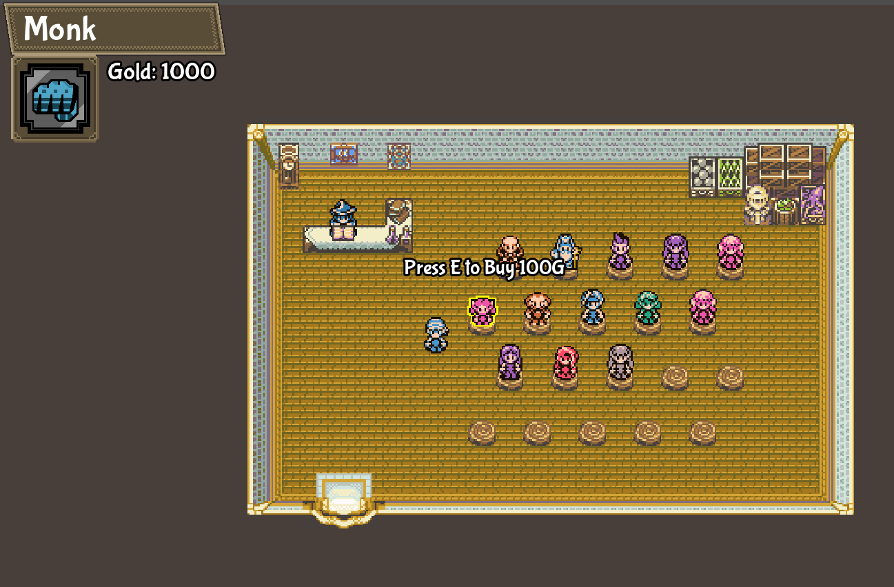
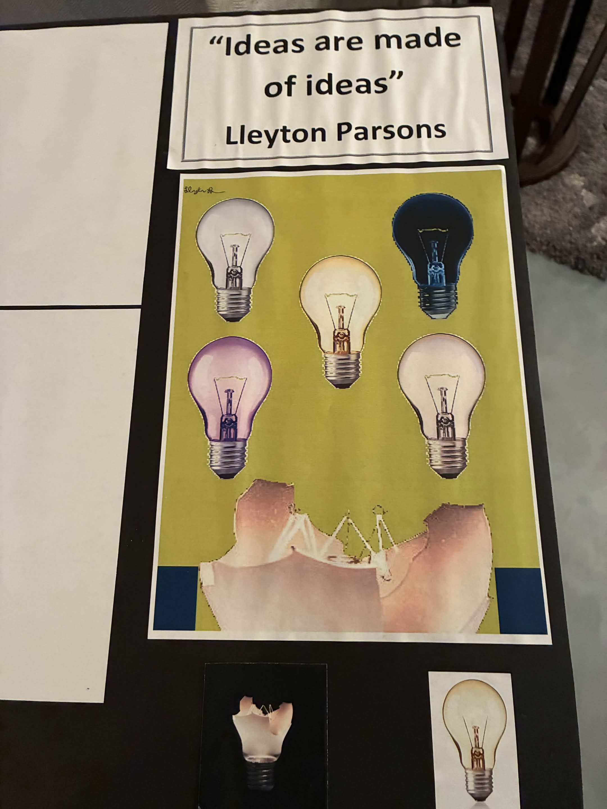
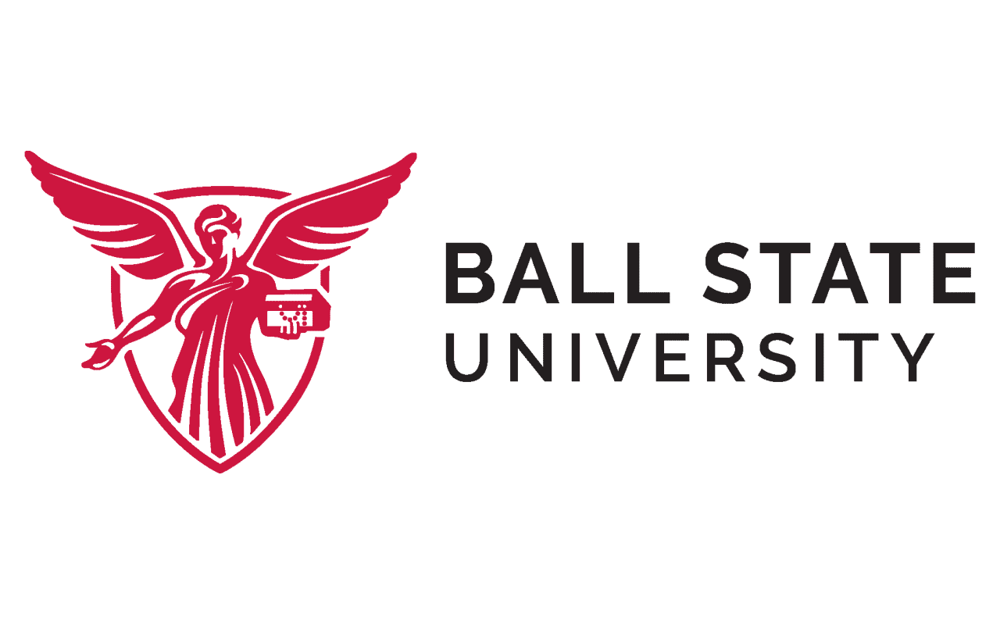

Programming languages:
- Java: Comfortable, coursework, projects
- Python: Familiar, coursework, projects
- CSS: Somewhat familiar, coursework, capstone project
- JavaScript: Somewhat familiar/Building on, coursework, projects
- HTML: Comfortable, building on, coursework, projects
- GDScript: Familiar, coursework, capstone project
My 3 Biggest Projects:
"Contentstack" Game Demo
Proof-of-concept demo Capstone project involving client company Contentstack to demonstrate that its headless CMS technology could be used to create a video game through live data and asset storage, loading, and modification. The project demonstrated real-time in-game content editing while being run on a local machine.
Personal contributions include:
- Creating two stable and functional in-game economy systems, with one system representing in-game currency (“gold”) and the other used for a “storefront” menu to simulate in-game purchases using real-world U.S. currency with proper calculations, updates to values and visuals (e.g. money counter), and rounding.
- Modified an existing menu navigation system provided by Godot to work with our project’s custom menu system/structure via both keyboard and mouse input from the user.
- Developed menu and UI designs, NPC dialogue, and several NPCs; contributed bug fixes and final iteration touch-ups to help finalize the project.
Showcased live during the Project Showcase for 2026 (hosted by BSU Immersive Learning) and 2026 Spring Student Symposium.

Movie Recommendation System
Group project made with Java with the use of an API from the International Movie Database (as given an API key).
Searches for and displays various movie recommendations based upon user search query.
This project gave me a lot of experience using Java and integrating an external technology such as an API into my code.
CS120 Annual Digital Art Show
Created with JES as an entry for the "Annual Digital Art Show", hosted by CS120 professor, Dave Largent.

My Strengths/How I work:
- Strengths:
- Can program with a clean style (as reported by three different TAs and professors in past semesters).
- Willing to provide extra effort when a project requires it with focus.
- Can multitask when more than one issue needs attention.
- How I work:
- I tend to investigate problems thoroughly and enjoy learning why something is not working.
- I enjoy collaborating with teammates to solve and communicate about problems.
- I am also comfortable working independently when given a clear goal.
- I value clear communication when working in group projects.
Awards/Honors:
- Dean's List: Fall 2023, Spring 2024, Spring 2025, Fall 2025
- 2023-2024 Dean’s Honor List of the Colleges of Sciences and Humanities
- 2024-2025 Dean’s Honor List of the Colleges of Sciences and Humanities
- Alpha Lambda Delta Honor Society
- The National Society of Collegiate Scholars
Contacts
Wanna work together?
- Email @: lleyton.parsons@bsu.edu
- Phone #: (765) 748-2297
- GitHub: LleytonParsons
